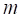
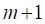
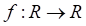
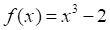
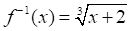
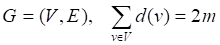

一、判断(共计50分,每题2.5分)
1、连通是图的结点集上的一个等价关系。
错误:【A】
2、“如果1+1≠3，则2+2≠4”是真命题。
错误:【B】
3、若A和B都是谓词公式，则(A∧B)、(A∨B)、(A→B)、(A<->B)都是谓词公式。
错误:【A】
4、“5是2的倍数。”不是命题。
错误:【B】
5、大于100的整数集合可以表示为{101,102,103，…}。
错误:【A】
6、对应日常生活中的“任意的”，“所有的”，“一切的”等词，用符号“任意”表示。
错误:【A】
7、设n阶无向连通图G有m条边，则m<n－1。
错误:【B】
8、对任意集合A，都有∅⊆A。
错误:【A】
9、简单图不含平行边。
错误:【A】
10、只由一个孤立结点构成的图称为平凡图。
错误:【A】
11、一个代数系统的单位元、零元、逆元如存在，则必唯一。
错误:【A】
12、连通且不含圈的图称为树。
错误:【A】
13、具有  条边的连通图最多具有  个结点。
错误:【A】
14、半群满足交换律。
错误:【B】
15、 一个从A到B的二元关系是有序偶的集合R，在每一个有序偶中，第一个元素取自A，第二个元素取自B。
错误:【A】
16、如果a是集合A中的元素，则称a属于A，记作a∉A。
错误:【B】
17、在有补分配格〈L，∨，∧〉中，任一元素a∈L的补元素是唯一的。
错误:【A】
18、设  ，  ，则 
错误:【A】
19、设R是集合A上的关系，若对于任意a，b∈A，当(a，b)∈R时，必有(b，a)∈R，则称R为对称的。
错误:【A】
20、对于任何（n，m）—图  。
错误:【A】
二、单选(共计50分,每题2.5分)
21、设有代数系统G=〈A，*〉，其中A是所有命题公式的集合，*为命题公式的合取运算，则G的幺元是（ ）
错误:【B】
22、若R和S是集合A上的两个关系，则下述结论正确的是（ ）
错误:【A】
23、下列等价式正确的是（ ）
错误:【C】
24、设A={{1，2，3}，{4，5}，{6，7，8}}，下列选项正确的是（ ）
错误:【C】
25、谓词公式x(P(x)∨(yR(y))→Q(x))中变元x是（ ）
错误:【D】
26、下列命题正确的是（ ）
错误:【B】
27、在公式（）F（x，y）→（ y）G（x，y）中变元x是（ ）
y）G（x，y）中变元x是（ ）
错误:【C】
28、下列函数中为双射的是（ ）
错误:【D】
29、设M（x）：x是人；F（x）：x要吃饭。用谓词公式表达下述命题：所有的人都要吃饭，其中错误的表达式是（ ）
错误:【C】
30、设个体域是整数集，则下列命题的真值为真的是（ ）
错误:【C】
31、下列集合对所给的运算是封闭的只有（ ）
错误:【C】
32、设集合A={1，2，3，……，10}，下列定义的运算关于集合A是不封闭的是（ ）
错误:【D】
33、下列为两个命题变元P，Q的小项是（ ）
错误:【C】
34、设<A，?，*>是环，则下列说法不正确的是（ ）
错误:【D】
35、下列式子正确的是（ ）
错误:【A】
36、设p：我很累，q：我去学习，命题：“除非我很累，否则我就去学习”的符号化正确的是（ ）
错误:【B】
37、设论域为整数集，下列真值为真的公式是（ ）
错误:【A】
38、设P：天下大雨,Q：他在室内运动,命题“除非天下大雨，否则他不在室内运动”可符合化为（ ）
错误:【C】
39、设无向图中有6条边，有一个3度顶点和一个5度顶点，其余顶点度为2，则该图的顶点数是（ ）
错误:【B】
40、下列语句中不是命题的只有（ ）
错误:【A】
 试卷加载中,请稍后......
试卷加载中,请稍后......